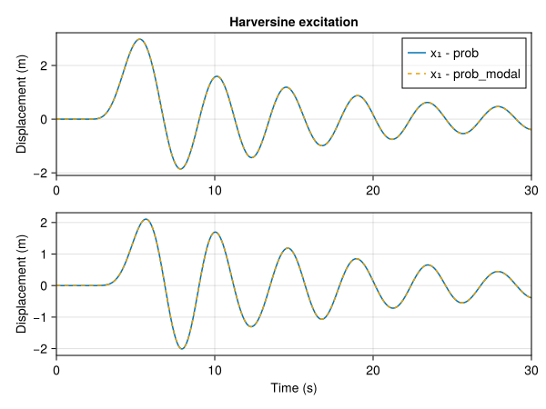

The aim of this section is to describe the modal time solvers available for solving Multi-degrees of freedom (Mdof) systems. To explain, the theoretical foundations of the proposed solvers, let’s consider a Mdof system with \(N\) degrees of freedom. The equation of motion of the system is given by: \[
\mathbf{M} \ddot{\mathbf{x}}(t) + \mathbf{C} \dot{\mathbf{x}}(t) + \mathbf{K} \mathbf{x}(t) = \mathbf{F}(t)
\] where \(\mathbf{M}\) is the mass matrix, \(\mathbf{C}\) is the damping matrix, \(\mathbf{K}\) is the stiffness matrix, \(\mathbf{x}(t)\) is the displacement vector, and \(\mathbf{F}(t)\) is the vector of external forces.
To solve the previous in the modal space, the solution \(\mathbf{x}(t)\) is expressed as: \[
\mathbf{x}(t) = \mathbf{\Phi} \mathbf{q}(t)
\] where \(\mathbf{\Phi}\) is the matrix of the mode shapes and \(\mathbf{q}(t)\) is the vector of modal coordinates.
Substituting the previous expression in the equation of motion, premultiplying by \(\mathbf{\Phi}^\mathsf{T}\), and using the orthogonality property of the mode shapes, one obtains a set of \(N\) independent modal equations of motion given by: \[
\ddot{q}_n(t) + 2 \xi_n \omega_n \dot{q}_n(t) + \omega_n^2 q_n(t) = \frac{f_n(t)}{m_n}
\] where for the n-th mode, \(q_n(t)\) is the generalized coordinate, \(\xi_n\) is the damping ratio, \(\omega_n\) is the natural angular frequency, \(f_n(t)\) is the modal force, and \(m_n\) is the modal mass.
It should be noticed that a modal equation of motion corresponds to the equation of motion of a Sdof system with mass \(m_n\), damping ratio \(\xi_n\), natural angular frequency \(\omega_n\).
It results that computing the response of an Mdof system in the modal space is equivalent to solving \(N\) independent Sdof systems.
Note
In the following, only modal damping is considered. This means that: \[
\mathbf{C}_n = \mathbf{\Phi}^\mathsf{T} \mathbf{C} \mathbf{\Phi} = \text{diag}(2\xi_1 \omega_1, 2\xi_2 \omega_2, \ldots, 2\xi_N \omega_N).
\]
1 Free response
The free response of an MDOF system is the response of the system when there are no external forces acting on it. In this case, the modal equations of motion of the system is given by: \[
\ddot{q}_n(t) + 2 \xi_n \omega_n \dot{q}_n(t) + \omega_n^2 q_n(t) = 0
\]
t::AbstractRange: Time points at which to evaluate the response
F::Matrix{Real}: External force matrix (or modal force matrix)
n::Int: Number of modes to retain in the modal basis
ismodal::Bool: Flag to indicate if the problem contains modal data
Note
Two possibilities are offered to the user to enter the structural properties of the system.
Provide the stiffness and mass matrices.
Provide the squared natural frequencies and (mass-normalized) mode shapes. This allows to use the modal information computed analytically for continuous systems or numerically for discrete systems.
In the latter case, the initial conditions must be expressed in the modal space.
Related function
solve
solve(prob::FreeModalTimeProblem)
Compute the free response of a multi-degrees of freedom (Mdof) system using the modal approach.
Inputs
prob: Structure containing the parameters of the Mdof problem
Output
sol: ModalTimeSolution structure containing the response of the system at the given time points
1.2 Example
# System parametersM =Diagonal([2., 1.])K = [6. -2.; -2. 4.]ξ =0.05# Time vectort =0.:1e-2:30.# Initial conditionsx0 = [0.2, 0.1]v0 =zeros(2)# Problem definition - case 1 - Provide the stiffness and mass matricesu0 = (x0, v0)prob =FreeModalTimeProblem(K, M, ξ, u0, t)# Problem definition - case 2 - Provide the squared natural frequencies and mode shapesωm, Φm =eigenmode(K, M)x0m = Φm'*M*x0v0m = Φm'*M*v0u0m = (x0m, v0m)prob_modal =FreeModalTimeProblem(ωm, Φm, ξ, u0m, t, ismodal =true)# Solutionx_free =solve(prob).ux_free_modal =solve(prob_modal).u
2 Forced response
The forced response of an Mdof system is the response of the system when external forces are acting on it. In this case, the modal equations of motion of the system is given by: \[
\ddot{q}_n(t) + 2 \xi_n \omega_n \dot{q}_n(t) + \omega_n^2 q_n(t) = \frac{f_n(t)}{m_n}
\]
t::AbstractRange: Time points at which to evaluate the response
n::Int: Number of modes to retain in the modal basis
ismodal::Bool: Flag to indicate if the problem contains modal data
Related function
solve
solve(prob::ForcedModalTimeProblem)
Compute the forced response of a multi-degrees of freedom (Mdof) system due to an arbitrary excitation using the modal approach.
Inputs
prob: Structure containing the parameters of the Mdof problem
method: Method to compute the Duhamel's integral
:filt: Filtering using the Z-transform of the impulse response (default)
:interp: Interpolation + Gaussian quadrature
:conv: Convolution
Output
sol: ModalTimeSolution structure containing the response of the system at the given time points
2.2.2 Example
# System parametersM =Diagonal([2., 1.])K = [6. -2.; -2. 4.]ξ =0.05# Time vectort =0.:1e-2:30.# Initial conditionsu0 = (zeros(2), zeros(2))# Excitation parametersF0 =10.tstart =2.duration =5.haversine =HaverSine(F0, tstart, duration)F0 =excitation(haversine, t)F =zeros(2, length(t))F[1, :] .= F0# Problem definition - case 1 - Provide the stiffness and mass matricesprob_forced =ForcedModalTimeProblem(K, M, ξ, F, u0, t)# Problem definition - case 2 - Provide the squared natural frequencies and mode shapesωm, Φm =eigenmode(K, M)u0m = (zeros(2), zeros(2))Lm = Φm'*Fprob_forced_modal =ForcedModalTimeProblem(ωm, Φm, ξ, Lm, u0m, t, ismodal =true)# Solutionx_forced =solve(prob_forced).ux_forced_modal =solve(prob_forced_modal).u

3 Additional function - Impulse response matrix
The impulse response matrix of an Mdof system is obtained from the modal impulse response matrix. The modal impulse response matrix is given by: \[
\mathbf{h}(t) = \Phi \begin{bmatrix}
h_1(t) & & & & \\
& \ddots & & & \\
& & h_n(t) & & \\
& & & \ddots & \\
& & & & h_N(t)
\end{bmatrix}
\Phi^\mathsf{T},
\] where \(h_n(t)\) is the modal impulse response of the mode \(n\) computed as in Sdof solvers - Section 1.3.